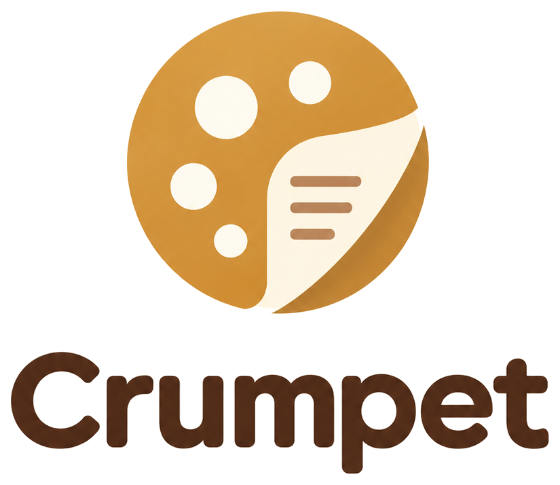

Terms
Last updated 7 October 2026
Crumpet is a free note-taking app, provided as it is, without warranties of any kind.
Your notes are yours. Crumpet keeps them on your device and, if you choose, in your own Google Drive. You are responsible for the content you write and for keeping your own backups.
Crumpet’s authors are not liable for any loss of data or other damage arising from using it.
Using Google Drive with Crumpet is also subject to Google’s own terms.
See also the privacy policy.